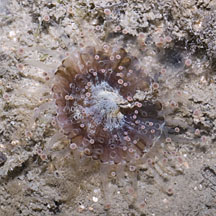
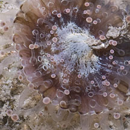
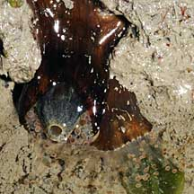
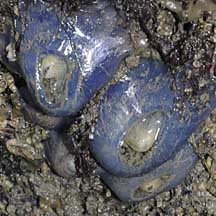
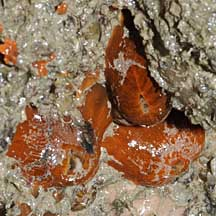
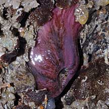

|
|
| corallimorphs text index | photo index |
| Phylum Cnidaria > Class Anthozoa > Subclass Zoantharia/Hexacorallia > Order Corallimorpharia |
| Ball-tip
corallimorphs Corynactis sp. Family Corallimorphidae updated Jul 2024 Where seen? This small animal with little balls at the tips of its transparent tentacles is seen growing on hard surfaces. Rocks and coral rubble in clusters of a few individuals. Sometimes seen on some of our shores. Features: Diameter with tentacles extended 1.5-4cm. Tentacles many, long thin, transparent with a ball-shaped tip that is usually white or a bright colour. Body column smooth, colours seen include brown, orange, red, pink, bright blue. Oral disk usually brown with whitish or paler centre. Central mouth conical, often pale and usually protruding even when the tentacles are tucked into the body column. Status and threats: There is inadequate information as at 2024 to make an informed assesment of its conservation status in Singapore. |
|
 Chek Jawa, Jul 11 |
 |
 Conical mouth protruding. |
|
 Pulau Ubin, Dec 09 |
 Changi, Oct 09 |
 Pulau Ubin, Dec 10 |
*Species are difficult to positively identify without close examination.
On this website, they are grouped by external features for convenience of display.
| Ball-tip corallimorphs on Singapore shores |
On wildsingapore
flickr
|
| Other sightings on Singapore shores |
| Acknowledgement Grateful thanks to Prof Daphne Fautin for identifying this animal as a corallimorph. |
|
Links
References
|